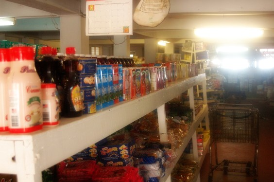

Farben entsättigen
Entsättigen Das eher belanglose Bild aus dem Inneren eines Supermarktes kann noch verbessert werden:
 |
| Abb. 1: Bild "Supermarkt" vor der Bearbeitung |
Durch Überblenden und Weichzeichnen machen wir einen Orton-Effekt, wie bereits beschrieben. Das Bild sieht dann so aus, die Rotanteile wirken jetzt zu schreiend:
|  |
| Abb. 2: Bild "Supermarkt" mit Orton-Effekt |
Bei der Anpassung der Sättigung unter Farben →
Farbton/Sättigung wird die Farbe Rot markiert und die Sättigung um 15 Punkte reduziert. Außerdem wird der Farbton noch leicht verschoben
 |
| Abb. 3: Werkzeug zur Anpassung von Farbton, Helligkeit und Sättigung |
Das fertige Bild:
 |
| Abb. 4: Das Rot wurde etwas entsättigt, was bei dem Bild auch notwendig war |
© 2009-2017 Michael Roppel